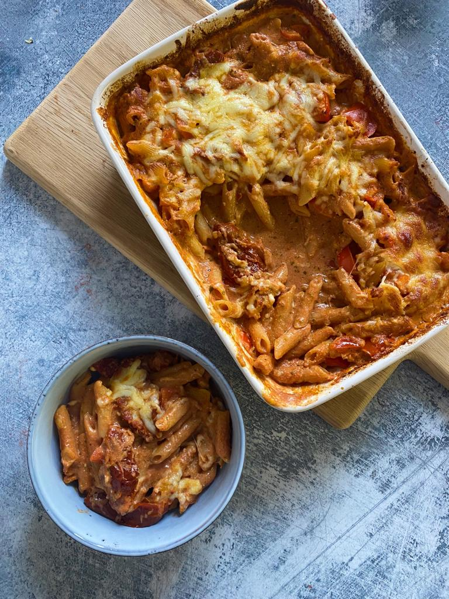

Home
Pasta Bake

Description
How to make the pasta sauce and freeze ready to defrost then add pasta and stock and pop straight into the oven.
Ingredients
- Passata
- Frozen chopped garlic
- Sundried tomatoes, drained of oil
- Cream cheese
- Pesto
- Dried pasta
- Vegetable stock
- Grated mozzarella
Steps
- To a large freezer bag add the garlic, sundried tomatoes, passata, cream cheese, sliced red peppers and pesto. Season, mix well and seal.
- Place the freezer bag of sauce flat in the freezer.
- Remove the sauce from the freezer and leave to fully defrost.
- Once defrosted, pour into an ovenproof dish, add the dried pasta and stock and place into the oven at 180oc for 20 minutes.
- After 20 minutes, remove from the oven, stir, scatter over the cheese.
- Place back into the oven for 15-20 minutes until the pasta is cooked and the cheese is golden and bubbly.